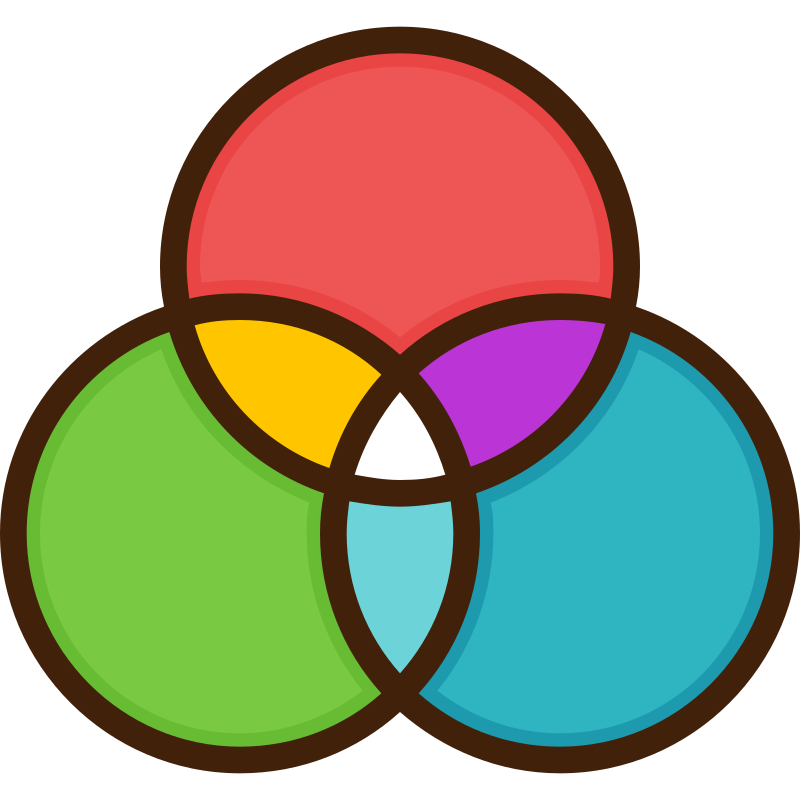

Final Project
History of Tic-Tac-Toe
"Tic-tac-toe (American English), noughts and crosses (Commonwealth English), or Xs and Os (Canadian or Irish English) is a paper-and-pencil game for two players who take turns marking the spaces in a three-by-three grid, one with Xs and the other with Os. A player wins when they mark all three spaces of a row, column, or diagonal of the grid, whereupon they traditionally draw a line through those three marks to indicate the win. It is a solved game, with a forced draw assuming best play from both players." -Wikipedia
RGB Color Model

"The RGB color model is an additive color model in which the red, green, and blue primary colors of light are added
together in various ways to reproduce a broad array of colors. The name of the model comes from the initials of the
three additive primary colors— red, green, and blue.
The main purpose of the RGB color model is for the sensing, representation, and display of images in electronic systems,
such as televisions and computers, though it has also been used in conventional photography and colored lighting. Before
the electronic age, the RGB color model already had a solid theory behind it, based in human perception of colors.
RGB is a device-dependent color model: different devices detect or reproduce a given RGB value differently, since the
color elements (such as phosphors or dyes) and their response to the individual red, green, and blue levels vary from
manufacturer to manufacturer, or even in the same device over time. Thus an RGB value does not define the same color
across devices without some kind of color management.
Typical RGB input devices are color TV and video cameras, image scanners, and digital cameras. Typical RGB output
devices are TV sets of various technologies (CRT, LCD, plasma, OLED, quantum dots, etc.), computer and mobile phone
displays, video projectors, multicolor LED displays and large screens such as the Jumbotron. Color printers, on the
other hand, are not RGB devices, but subtractive color devices typically using the CMYK color model." -Wikipedia